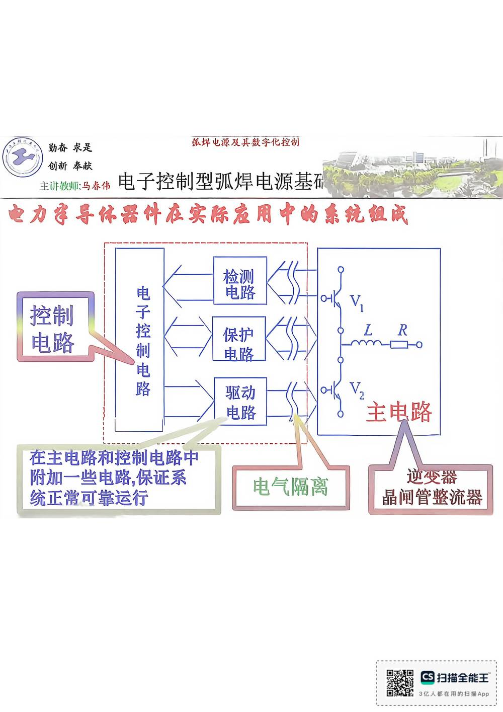

13 手写笔记/1~5周/h-w1-031 晶闸管整流盎
h-w1-031 晶闸管整流盎
📷 原图：
1~5周 焊接电源(1).pdf第 31 页（整页扫描，本库内嵌h-w1-031.jpg）
晶闸管整流盎

本页文字（OCR 整理）
- 主讲换师：马添伟电子控制型弧焊电源基碳
- 电力军导体器件在实际应用中的系统组成
- 在主电路和控制电路中
- 附加一些电路，保证系
- 统正常可靠运行
- 电气隔离
- 晶闸管整流盎
本页重点（自动标记：含"定义/特点/要求/结论/公式"等，或与课件原句高度一致）
- 电力军导体器件在实际应用中的系统组成
OCR 说明
文字由 macOS Vision 识别手写体/翻拍页面得到，错字难免（如"弧"误识为"孤"）；重点标记据此推断，请以页图为准。
对应讲义页
关联
- ← 上一页 · 总览 · 下一页 →
- 讲义：00 第4章 电子控制型 导航 · 概念：04 概念地图